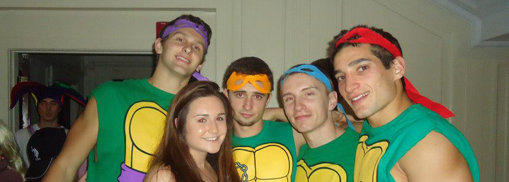
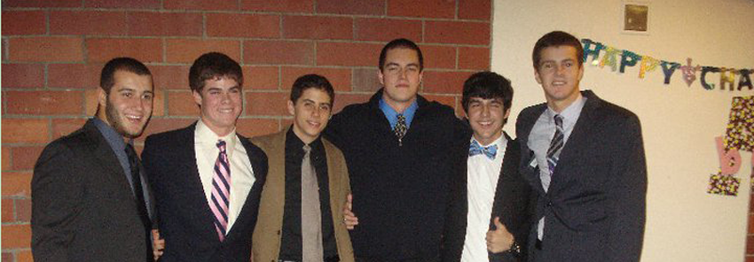

Class of 2013
Jimmy Burke
Hometown: Colts Neck, NJ
The thing I’m going to miss most about fraternity life is: living with all my friends.
I want to be remembered for: being a hard worker and a successful person
In ten years, you’ll find me: probably Wall Street
Favorite quote: If you're trying to achieve, there will be roadblocks. I've had them; everybody has had them. But obstacles don't have to stop you. If you run into a wall, don't turn around and give up. Figure out how to climb it, go through it, or work around it
Mitchell Kates
Major: Electrical Engineering and Computer Science
When I’m not studying I like to… Basketball, entrepreneurship
My favorite movie is: Forgetting Sarah Marshall
My dream date is : Taylor Swift
The thing I’m going to miss most about fraternity life is: hanging out with the brothers
I want to be remembered for: being a great bro
In ten years, you’ll find me: retired, hopefully
Favorite quote: “You can do it, we can help
Will Tashman
Major: Physics and Business
When I’m not studying I like to… Basketball, video games, read books, build things
My favorite movie is: Talladega Nights bc if you’re not first your last.
The thing I’m going to miss most about fraternity life is: Always having bros around to chill with
I want to be remembered for: Leaving every place better than I found it
In ten years, you’ll find me: Back in California hopefully, working surfing and playing basketball
Favorite quote: Nothing will work unless you do- John Wooden
Nick Sather
Hometown: Colts Neck, NJ
The thing I’m going to miss most about fraternity life is: living with all my friends.
I want to be remembered for: being a hard worker and a successful person
In ten years, you’ll find me: probably Wall Street
Favorite quote: If you're trying to achieve, there will be roadblocks. I've had them; everybody has had them. But obstacles don't have to stop you. If you run into a wall, don't turn around and give up. Figure out how to climb it, go through it, or work around it
Aaron Fittery
Major: Materials Science and Engineering
When not studying I like kickin it at the house and playing on the MIT basketball team
I have alot of favorite movies, basically most heist movies, James Bond, the Prestige, Batman, and most comedies with seth rogen or michael cera... or older will ferrel stuff... and lately steve carill's gotten alot funnier too.
Dream date= Emmanuelle Chriqui. Wish I could be on entourage
I want to be remembered for always having fun and getting the most out of life (this is a dumb question, you should live your life not worried about how other people will think of you)
In ten years, I'll be sitting on a California beach with my beautiful wife while serving as the head of an energy research lab at Sandia National Laboratories
Quote: "I don't know how to put this but I'm kind of a big deal." -Ron Burgundy/Will Tashman
Ben Montgomery
Major: VI-2: Electrical Engineering and Computer Science
When I'm not studying I like to... play basketball and do anything that is funny/entertaining
My favorite movie is: Snatch bc Awesome cast and characters and funny, well-written plot
The thing I'm going to miss most about fraternity: Not thinking that far ahead yet.
I want to be remembered for: my awesomeness
In then years you'll find me: still awesome
Class of 2014

James Arana
Mike Attanasio

Britt Cyr
Nick Davis
Will Dickson
Tim Donegan
Josh Dunaway
Andres Hasfura
Ben Hessels
Kiel Jindra
Matt Merlino
Joel Santisteban
Zack Thain

Billy Thalheimer
Will Watkins
John Wenzel
Class of 2015
Jimmy Burke
Hometown: Colts Neck, NJ
The thing I’m going to miss most about fraternity life is: living with all my friends.
I want to be remembered for: being a hard worker and a successful person
In ten years, you’ll find me: probably Wall Street
Favorite quote: If you're trying to achieve, there will be roadblocks. I've had them; everybody has had them. But obstacles don't have to stop you. If you run into a wall, don't turn around and give up. Figure out how to climb it, go through it, or work around it
Mitchell Kates
Hometown: Colts Neck, NJ
The thing I’m going to miss most about fraternity life is: living with all my friends.
I want to be remembered for: being a hard worker and a successful person
In ten years, you’ll find me: probably Wall Street
I want to be remembered for: being a hard worker and a successful person
In ten years, you’ll find me: probably Wall Street
Favorite quote: If you're trying to achieve, there will be roadblocks. I've had them; everybody has had them. But obstacles don't have to stop you. If you run into a wall, don't turn around and give up. Figure out how to climb it, go through it, or work around it
Class of 2016
Jimmy Burke
Hometown: Colts Neck, NJ
The thing I’m going to miss most about fraternity life is: living with all my friends.
I want to be remembered for: being a hard worker and a successful person
In ten years, you’ll find me: probably Wall Street
Favorite quote: If you're trying to achieve, there will be roadblocks. I've had them; everybody has had them. But obstacles don't have to stop you. If you run into a wall, don't turn around and give up. Figure out how to climb it, go through it, or work around it
Mitchell Kates
Hometown: Colts Neck, NJ
The thing I’m going to miss most about fraternity life is: living with all my friends.
I want to be remembered for: being a hard worker and a successful person
In ten years, you’ll find me: probably Wall Street
I want to be remembered for: being a hard worker and a successful person
In ten years, you’ll find me: probably Wall Street
Favorite quote: If you're trying to achieve, there will be roadblocks. I've had them; everybody has had them. But obstacles don't have to stop you. If you run into a wall, don't turn around and give up. Figure out how to climb it, go through it, or work around it